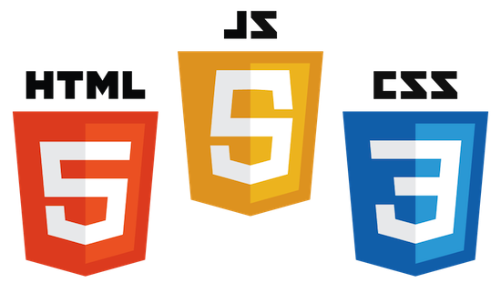
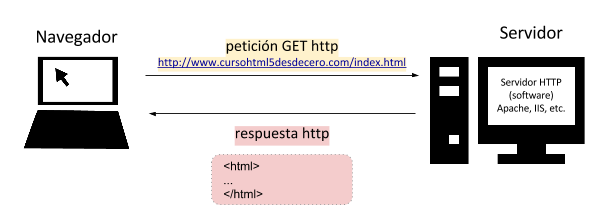

Objetivos del curso

Este curso lo puede realizar cualquier persona, sólo hace falta tener ganas de aprender. A lo largo del mismo vamos a:
- Aprender los elementos de HTML5, CSS3 y Javascript que usaremos el día día (los más comunes)
- Descubrir dónde podremos resolver nuestras dudas cuando tengamos problemas.
- Trabajar con algunas de las herramientas que usan los profesionales del mundo real como son Github o las herramientas para desarrolladores de Google Chrome.
Es muy importante saber que en la programación web hay muchas formas de resolver un mismo problema, y que todas pueden ser igualmente
válidas.
Dicho esto, queremos aclarar que el objetivo del curso no es aprender todas y cada una de las formas de resolver un problema (esto se va aprendiendo con años de práctica), y por esto no entraremos en profundidad en todos y cada uno de los elementos y caractarísticas de cada lenguaje.
El objetivo es dotarnos de una buena base que nos permita sentirnos capaces de afrontar cualquier proyecto, para ello nos centraremos sólamente en los conocimientos y herramientas más importantes de un desarrolladores front-end.
Las definiciones estarán simplificadas, esto está hecho a conciencia ya que no se asume ningún conocimiento previo por parte del alumno, por eso en muchas ocasiones se dirán cosas correctas pero parcialmente válidas (con el objetivo de facilitar su comprensión y evitar distraernos del objetivo del curso). Así que recuerda, no las tomes al pie de la letra, tómalas como definiciones lo suficiente buenas como para ayudarnos a entender lo demás. De todos modos para siempre que se de este caso dejaremos los enlaces los recursos donde podremos encontrar la definición exacta para aquellos que se sientan más cómodos.
Nota importante: Si en algún punto de la lección tienes alguna duda pregúntala, por muy tonta que creas que es. Ya que si consigues terminar sin ninguna duda,
el día que algo no te funcione sabrás mucho mejor por dónde empezar a buscar el error. Además vuestras dudas nos ayudarán a añadir aclaraciones o mejoras sobre los conceptos para que personas que posteriormente hagan el curso lo tengan más fácil y claro.
Lección 1
En esta primera lección vamos a empezar por aprender los conceptos fundamentales a la hora de entender el funcionamiento de una página web y por tanto la base para entender de dónde pueden venir los errores que comentamos en el futuro, por eso
no empezamos a hablar de HTML5 hasta el final de la lección. Además es importante interiorizar bien estos conceptos ya que nos los encontraremos con frecuencia en otras páginas, explicaciones, etc.
Servidores y navegadores web
A un servidor web es un programa
que se encarga (entre otras cosas) de enviar archivos desde el disco duro del ordenador donde está instalado a los navegadores web que los soliciten (nota: también se le llama servidor que al propio ordenador que tiene este software instalado). Y un navegador web es un programa que recibe, entiende y transforma este código que recibe a través de la red en algo entendible para un humano (una página web)

Entre algunas de las responsabilidades que debe garantizar de un navegador se encuentran:
-
Integridad: para transmitir páginas web se utiliza una forma de comunicación llamada HTTP (o protocolo HTTP). Este protocolo es el lenguaje común entre el servidor y el navegador web, los mensajes más frencuentes
que le enviará el navegador al servidor serán de dos tipos:
-
GET: para solicitar información.
-
POST: para enviar información.
Y el servidor nos responderá con mensajes tipo:
- 200: Significa que se ha encontrado correctamente el recurso.
- 403: Significa que no tenemos permiso para acceso al recurso.
- 404: Significa que el fichero que le hemos no se ha podido encontrar el disco duro (puede ser porque no esté o porque la ruta es incorrecta).
-
Seguridad: dado que los navegadores reciben código escrito por otras personas, la seguridad en Internet se define a diferentes niveles de seguridad: durante el envío (HTTPS), al ejecutarse en el navegador (CORS), etc.
-
Optimización: al mismo tiempo que reciben la información integran mecanismos para acelerar la carga y mejorar la experiencia del usuario como es utilizar la memoria caché (memoria de almacenamiento temporal).
- etc.
Aunque existen multitud de navegadores y de servidores web en los módulos de HTML5 y CSS3 usaremos principalmente Google Chrome y no usaremos de momento ningún servidor web.
¿Cómo funcionan las URLs? (Uniform Resource Locator)
Para acceder a un fichero/recurso a través de un navegador usamos la URL que sigue el siguiente formato:
scheme:[//[user:password@]host[:port]][/]path[?query][#fragment]
Vamos a hacer un pequeño repaso a cada una de las partes de la URL:
- scheme (obligatorio): este suele ser ser http o https normalmente, aunque podría ser file, ftp, mailto, skype, etc
- user:password@
- host: nombre de dominio (p.e.: www.tusitioweb.com) o IP (79.82.123.1)
- port: puerto (si no se especifica ninguno se usa el 80 por defecto)
- path (obligatorio): ruta al fichero
- query: parámetros/variables
- fragment: punto de anclaje
¿Qué vamos a necesitar?
Un editor de texto (o editor de código), por ejemplo:
Introducción a HTML5
 HTML (Hypertext Markup Language) es un lenguaje de marcas creado por el W3Cque sirve para definir la estructura y la semántica de nuestra página web. El W3C es un consorcio de personas, investigadores, empresas, etc. que
trabajan continuamente para definir las normas que luego los fabricantes de navegadores deben implementar en sus navegadores que el mismo código funcione de igual manera en todos los navegadores.
HTML (Hypertext Markup Language) es un lenguaje de marcas creado por el W3Cque sirve para definir la estructura y la semántica de nuestra página web. El W3C es un consorcio de personas, investigadores, empresas, etc. que
trabajan continuamente para definir las normas que luego los fabricantes de navegadores deben implementar en sus navegadores que el mismo código funcione de igual manera en todos los navegadores.
Por tanto las versiones han evolucionado a lo largo de los años: HTML 2.0 (1995), HTML 4.0 (1997), XHTML (2000), HTML5 (2014), etc. con el objetivo de adaptarse a los nuevos tiempos y así dar soporte a nuevas necesidades (estandarización de los sistemas de autio, vídeo, etc)
El fichero index.html: por defecto los servidores web cuando reciben la petición de un fichero y no se indica
explicitamente el nombre del fichero busca en la carpeta un fichero con nombre "index.html", si lo encuentra lo devuelve.
Etiquetas y atributos
Ejemplo
<etiqueta atributo="valor">Contenido<etiqueta>
<etiqueta atributo="valor">
Estructura básica
<!DOCTYPE html>
<html>
<head>
<meta charset="UTF-8">
<title>Título de la página</title>
</head>
<body>
</body>
</html>
A continuación explicamos la función que cumple cada etiqueta:
- <!DOCTYPE html> ... </html>: sirve para indicarle al navegador que el código HTML que le vamos a escribir dentro está en la versión 5, osea que es HTML5.
- <head> ... </head>: contiene otras etiquetas que ofrecen principalmente información al navegador, a los buscadores y a otras páginas (como pueden ser redes sociales, etc).
- <meta charset="UTF-8">: indicamos al navegador qué tipo de caracteres contiene la página. Para especificar cuál de todos los disponibles usamos el atributo charset con el valor < href="">UTF-8 que nos servirá para siempre que trabajemos en....
- <title> ... </title>: indica el título de nuetra página, la usan los navegadores, buscadores, etc.
- <body> ... </body>: contiene todo el contenido visible por el visitante de nuestra página.
Nota ¿por qué tabulamos nuestro código?: la tabulación es muy importante utilizarla usarla para facilitar la lectura del código.
Introducción a Google Chrome Developer Tools
De momento sólo nos vamos a centrar en tres de las pestañas:
Antes de continuar, estilos por defecto del navegador, inspeccionar/editar, etc.
Espacios, menor que, etc.
Validar nuestro código
Que el código se muestre en nuestro navegador web como queríamos no implica necesariamente que lo hayamos escrito bien.
En muchas ocasiones el navegador es capaz de detectar errores humanos y corregirlos de manera automática para que el
usuario vea bien la página, pero esto no es siempre así. Si queremos asegurarnos de que nuestra página está correctamente
escrita podemos usar el Validador de HTML del W3C, que además en caso de encontrar errores nos dará pistas sobre cómo resolverlos.
Recursos
- Mozilla CDN
- Chuleta de etiquetas HTML5
- Curso de Chrome Developer Tools
Dudas
Github code comments / issues
Ejercicio
Ejercicio tipo test
Este primer ejercicio consiste en crear un documento HTML5 con la estructura que hemos visto previamente,
configurar Google Chrome para poder editar el fichero y subir nuestro ejercicio a Github.
- Crear una carpeta en tu disco duro en la que iremos añadiendo los ejercicios
- Crear un fichero index.html dentro de la carpeta y copiar la estructura básica que hemos visto
- Configurar Google Chrome para poder editar nuestro fichero
- Crear una cuenta en Github si no la tenemos
- Crear un repositorio para este curso
- Subir el código que hemos hecho a nuestro repositorio
Dudas con los ejercicios, si tienes alguna duda con el ejercicio